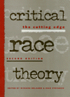
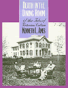
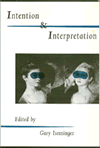
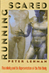

| 
|
Aesthetics
of Environment
Berleant,
Arnold
An engaging discussion of environment as aesthetic experience
New in Paperback!
256 pp • 6x9 • Fall 1992
paper 1-56639-334-5
EAN 978-1-56639-334-8
|
| 
|
All
is Never Said
The Story of Odette Harper Hines
Rollins,
Judith
The spirited oral history of a remarkable African American woman
288 pp • 6x9 • Spring 1995
paper 1-56639-308-6
EAN 978-1-56639-308-9
cloth 1-56639-307-8
EAN 978-1-56639-307-2
|
|
|
Animals,
Property, and the Law
Francione,
Gary L., and William M. Kunstler
How to balance the failure of the legal system to protect animals
with its professed recognition of animal rights
368 pp • 6x9 • Spring 1995
paper 1-56639-284-5
EAN 978-1-56639-284-6
cloth 1-56639-283-7
EAN 978-1-56639-283-9
|
|
|
Bachata
A Social History of a Dominican Popular Music
Hernandez,
Deborah Pacini
Tracing bachata's rise to popularity and the implications of
its development
296 pp • 6x9 • Spring 1995
paper 1-56639-300-0
EAN 978-1-56639-300-3
cloth 1-56639-299-3
EAN 978-1-56639-299-0
|
|
|
Bad
Faith, Good Faith, and Authenticity in Sartre's Early Philosophy
Santoni,
Ronald E.
An incisive analysis of Jean-Paul Sartre's early writings
288 pp • 5.5x8.25 • Spring 1995
paper 1-56639-320-5
EAN 978-1-56639-320-1
cloth 1-56639-319-1
EAN 978-1-56639-319-5
|
|
|
Between
Melting Pot and Mosaic
African American and Puerto Ricans in the New York Political Economy
Torres,
Andr�s
A political-economic reassessment of New York's African American
and Puerto Rican communities
264 pp • 6x9 • Spring 1995
paper 1-56639-280-2
EAN 978-1-56639-280-8
cloth 1-56639-279-9
EAN 978-1-56639-279-2
|
|
|
Beyond
the Schoolhouse Gate
Free Speech and the Inculcation of Values
Lane,
Robert Wheeler
A pragmatic inquiry into student speech, public schooling and
the First Amendment
224 pp • 5.5x8.25 • Spring 1995
paper 1-56639-275-6
EAN 978-1-56639-275-4
cloth 1-56639-274-8
EAN 978-1-56639-274-7
|
| 
|
Chinatown
The Socioeconomic Potential of an Urban Enclave
Zhou,
Min, and Alejandro Portes
Ethnic enclaves as an alternative means of incorporation into
the larger society
New in Paperback!
316 pp • 6x9 • Spring 1992
paper 1-56639-337-X
EAN 978-1-56639-337-9
|
|
|
Common
Sense about Police Review
Perez,
Douglas W.
A call for effective police review systems
New in Paperback!
336 pp • 6x9 • Spring 1994
paper 1-56639-336-1
EAN 978-1-56639-336-2
|
| 
|
Critical
Race Theory
The Cutting Edge
Delgado,
Richard, and Jean Stefancic
Essays on racial justice by leading members of the Critical Race
Theory movement
704 pp • 7x10 • Spring 1995
paper 1-56639-348-5
EAN 978-1-56639-348-5
cloth 1-56639-347-7
EAN 978-1-56639-347-8
|
|
|
The
Cry and the Dedication
Carlos Bulosan
E.
San Juan, Jr., ed.
The adventures of seven Filipino guerrillas rebelling against
U.S. domination
344 pp • 6x9 • Spring 1995
paper 1-56639-296-9
EAN 978-1-56639-296-9
cloth 1-56639-295-0
EAN 978-1-56639-295-2
|
|
|
Cuttin'
the Body Loose
Historical, Biological, and Personal Approaches to Death and Dying
Gavin,
William Joseph
An exploration of the practical and philosophical questions surrounding
death and dying
256 pp • 5.5x8.25 • Spring 1995
paper 1-56639-298-5
EAN 978-1-56639-298-3
cloth 1-56639-297-7
EAN 978-1-56639-297-6
|
| 
|
Death
in the Dining Room and Other Tales of Victorian Culture
Ames,
Kenneth L.
A richly illustrated and provocative discussion of Victorian
culture through an exploration of common household goods
New in Paperback!
280 pp • 8.5x11 • Spring 1992
paper 1-56639-333-7
EAN 978-1-56639-333-1
|
|
|
Degrees
of Equality
The American Association of University Women and the Challenge
of Twentieth-Century Feminism
Levine,
Susan, and Alice Ann Leidel
The history of one of the nation's most influential voices for
equality
240 pp • 6x9 • Spring 1995
cloth 1-56639-326-4
EAN 978-1-56639-326-3
|
|
|
Discrepant
Histories
Translocal Essays on Filipino Cultures
Rafael,
Vicente L., ed.
Postcolonial issues of identity, social control, power, representation,
and culture
360 pp • 6x9 • Spring 1995
paper 1-56639-356-6
EAN 978-1-56639-356-0
cloth 1-56639-355-8
EAN 978-1-56639-355-3
|
|
|
Feminism
and Community
Weiss,
Penny A., and Marilyn Friedman, eds.
A rich collection of essays on the importance of community to
women's social, cultural, and political relationships
432 pp • 6x9 • Spring 1995
paper 1-56639-277-2
EAN 978-1-56639-277-8
cloth 1-56639-276-4
EAN 978-1-56639-276-1
|
|
|
Feminist
Generations
The Persistence of the Radical Women's Movement
Whittier,
Nancy
Conflict and cooperation between generations of radical feminists
320 pp • 5.5x8.25 • Spring 1995
paper 1-56639-282-9
EAN 978-1-56639-282-2
cloth 1-56639-281-0
EAN 978-1-56639-281-5
|
|
|
Filipino
American Lives
Espiritu,
Yen Le
First person narratives by Filipino Americans reveal the range
of their experiences—before and after immigration
240 pp • 6x9 • Spring 1995
paper 1-56639-317-5
EAN 978-1-56639-317-1
cloth 1-56639-316-7
EAN 978-1-56639-316-4
|
|
|
Final
Negotiations
A Story of Love, and Chronic Illness
Ellis,
Carolyn
A poignant memoir about what it means to be involved—and
in love—with someone who is chronically ill
368 pp • 6x9 • Spring 1995
paper 1-56639-271-3
EAN 978-1-56639-271-6
cloth 1-56639-270-5
EAN 978-1-56639-270-9
|
|
|
Gardens
of Philadelphia and the Delaware Valley
Klein,
Jr., William M., and Derek Fell
Eloquent narratives and sumptuous full color portraits of this
region's most celebrated gardens
320 pp • 8x10 • Spring 1995
cloth 1-56639-313-2
EAN 978-1-56639-313-3
|
|
|
Human
Transactions
The Emergence of Meaning In Time
Stahl,
Gary H.
A provocative account of the creation of human meaning in history
232 pp • 6x9 • Spring 1995
cloth 1-56639-287-X
EAN 978-1-56639-287-7
|
|
|
In
Timber Country
Working People’s Stories of Environmental Conflict and Urban
Flight
Brown,
Beverly A.
Personal stories from all sides of the battle for preserving
timber country
336 pp • 6x9 • Spring 1995
paper 1-56639-273-X
EAN 978-1-56639-273-0
cloth 1-56639-272-1
EAN 978-1-56639-272-3
|
|
|
In
Washington but Not of It
The Prophetic Politics of Religious Lobbyists
Hofrenning,
Daniel J.B.
Strategies of religious lobbyists and their manueverings in American
politics
256 pp • 5.5x8.25 • Spring 1995
paper 1-56639-304-3
EAN 978-1-56639-304-1
cloth 1-56639-303-5
EAN 978-1-56639-303-4
|
| 
|
Intention
and Interpretation
Iseminger,
Gary
A complete analysis of the postmodern debate on authorial intention
New in Paperback!
304 pp • 6x9 • Fall 1992
paper 1-56639-346-9
EAN 978-1-56639-346-1
|
| 
|
A
Life in the Struggle
Ivory Perry and the Culture of Opposition
Lipsitz,
George
The life story of a grassroots, civil rights activist
Revised Edition
320 pp • 6x9 • Spring 1995
paper 1-56639-321-3
EAN 978-1-56639-321-8
|
|
|
On
Becoming Filipino
Selected Writings of Carlos Bulosan
E. San
Juan, Jr., ed.
A collection of writings by a prolific and political Filipino
American writer
240 pp • 5.5x8.25 • Spring 1995
paper 1-56639-310-8
EAN 978-1-56639-310-2
cloth 1-56639-309-4
EAN 978-1-56639-309-6
|
|
|
Producing
Power
Ethnicity, Gender, and Class in a Caribbean Workplace
Yelvington,
Kevin A.
A study of ethnicity, gender, and class as integral elements
of class structure
304 pp • 6x9 • Spring 1995
paper 1-56639-286-1
EAN 978-1-56639-286-0
cloth 1-56639-285-3
EAN 978-1-56639-285-3
|
|
|
Religion
and Radical Politics
An Alternative Christian Tradition in the United States
Craig,
Robert H.
Leftist Christians and radical politics in American history
New in Paperback!
320 pp • 6x9 • Fall 1992
paper 1-56639-335-3
EAN 978-1-56639-335-5
|
|
|
Rites
of Assent
Two Novellas
Qasim,
Abdal Hakim, Peter Theroux, and Samia Mehrez
The first English-language translation of a controversial Egyptian
writer
192 pp • 5.5x8.25 • Spring 1995
paper 1-56639-354-X
EAN 978-1-56639-354-6
cloth 1-56639-353-1
EAN 978-1-56639-353-9
|
| 
|
Running
Scared
Masculinity and the Representations of the Male Body
Lehman,
Peter
Literal and symbolic representations of the nude male body exposed
as cultural taboos
New in Paperback!
256 pp • 6.5x9.25 • Fall 1993
paper 1-56639-222-5
EAN 978-1-56639-222-8
|
| 
|
Seeing
New York
History Walks for Armchair and Footloose Travelers
Cooke,
Hope
An off-the-beaten bath tour of New York that transcends the usual
guide book
464 pp • 6x9 • Spring 1995
paper 1-56639-289-6
EAN 978-1-56639-289-1
cloth 1-56639-288-8
EAN 978-1-56639-288-4
|
|
|
Shantytown
Protest In Pinochet's Chile
Schneider,
Cathy Lisa
A study of Chile's shantytown resistance testifies to the power
of popular sturggles
296 pp • 5.5x8.25 • Spring 1995
paper 1-56639-306-X
EAN 978-1-56639-306-5
cloth 1-56639-305-1
EAN 978-1-56639-305-8
|
|
|
Theologies
and Liberation in Peru
The Role of Ideas in Social Movements
Peña,
Milagros
The factors at play in the fate of liberation theology in Peru
240 pp • 5.5x8.25 • Spring 1995
cloth 1-56639-294-2
EAN 978-1-56639-294-5
|
|
|
This
Fine Place So Far from Home
Voices of Academics from the Working Class
Dews,
C.L. Barney, and Carolyn Leste Law, eds.
Affecting stories of faculty and graduate students from working-class
on their struggles in academia
352 pp • 6x9 • Spring 1995
paper 1-56639-291-8
EAN 978-1-56639-291-4
cloth 1-56639-290-X
EAN 978-1-56639-290-7
|
|
|
The
Two Faces of Political Apathy
DeLuca,
Jr., Thomas
A challenge to complacency and non participation in American
politics
304 pp • 6x9 • Spring 1995
paper 1-56639-315-9
EAN 978-1-56639-315-7
cloth 1-56639-314-0
EAN 978-1-56639-314-0
|
|
|
Waiting
on Washington
Central American Workers in the Nation’s Capital
Repak,
Terry Ann
A comprehensive study highlighting gender differences in the
forces that propel international migrations
272 pp • 5.5x8.25 • Spring 1995
paper 1-56639-302-7
EAN 978-1-56639-302-7
cloth 1-56639-301-9
EAN 978-1-56639-301-0
|
|
|
Women
in the Latin American Development Process
Bose,
Christine E., and Edna Acosta-Bel�n, eds.
The role of gender and politics in the ever-changing goals and
effects of development
304 pp • 6x9 • Spring 1995
paper 1-56639-293-4
EAN 978-1-56639-293-8
cloth 1-56639-292-6
EAN 978-1-56639-292-1
|
|
|
Young
Unwed Fathers
Changing Roles and Emerging Policies
Lerman,
Robert I., and Theodara J. Ooms, eds.
Essays on policies, programs, and ethical issues
New in Paperback!
360 pp • 6x9 • Spring 1993
paper 1-56639-318-3
EAN 978-1-56639-318-8
|